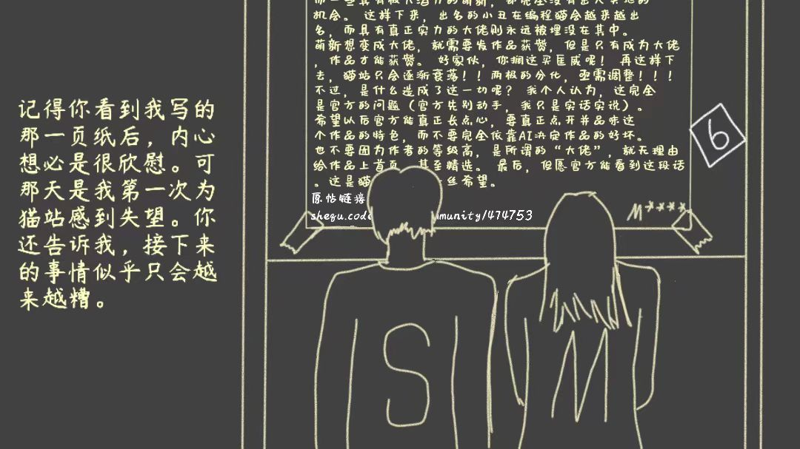
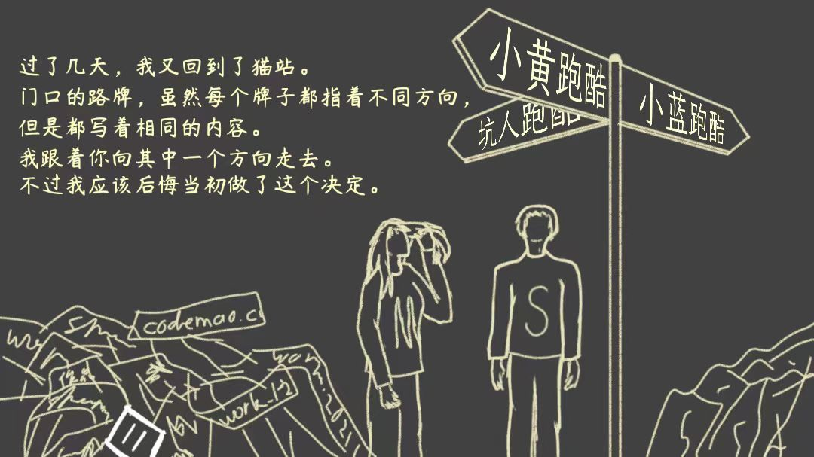
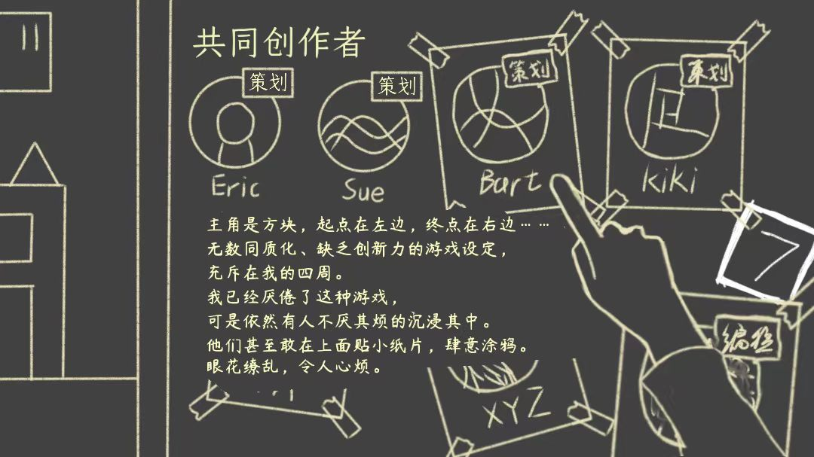
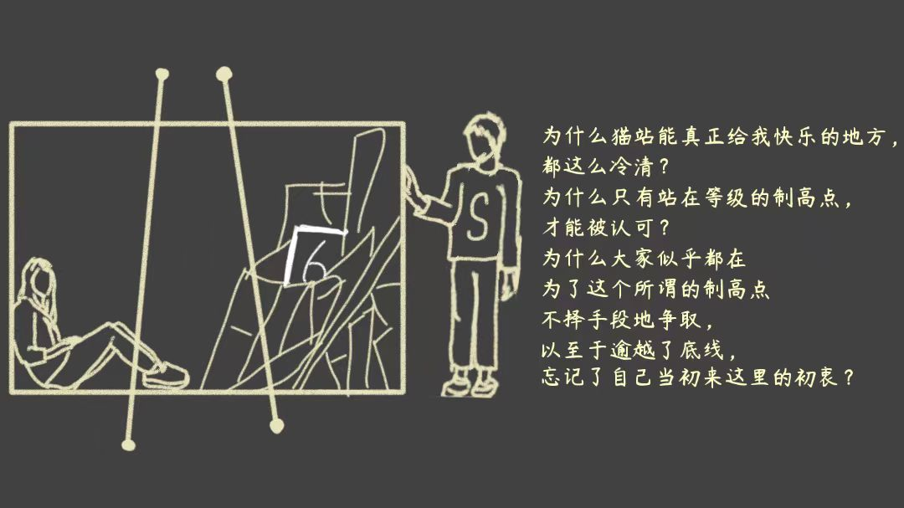
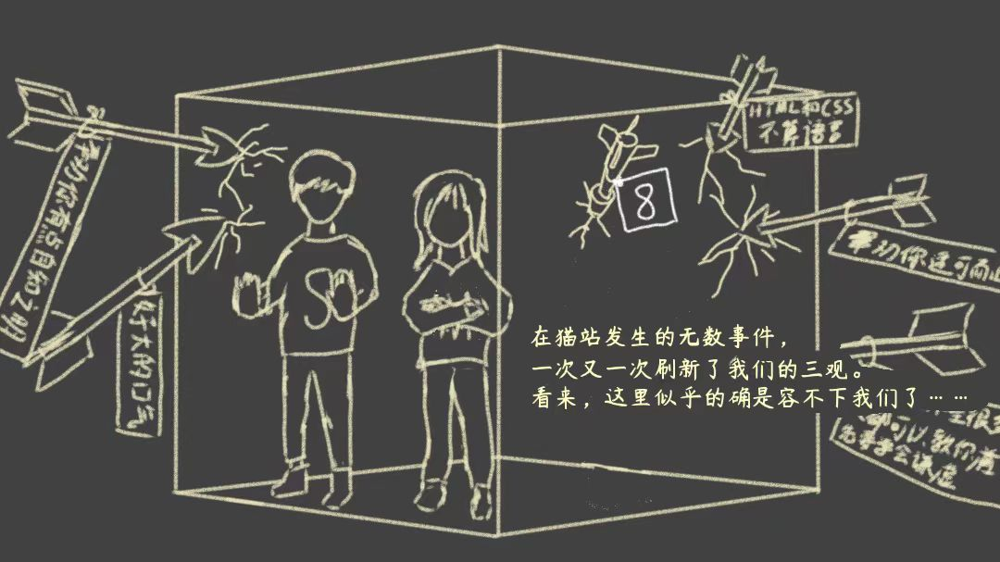

|  | 第11关当时你看到我写的那页纸后，内心想必是很欣慰。 可那天是我第一次为猫站感到失望。 你还告诉我，接下来的事情似乎只会越来越糟。 （原帖链接是真实存在的。https://shequ.codemao.cn/community/474753 背景公告栏上的文字为原文内容，只不过为了故事情节，我把所有的“编程猫”替换成了“猫站”） |
过关攻略（6次旋转）： 按照下列顺序旋转立方体 下左下右下右→进门通关 |
|
|  | 第12关过了几天，我又回到了猫站。 门口的路牌，虽然每个牌子都指着不同方向， 但是都写着相同的内容。 我跟着你向其中一个方向走去。 不过我应该后悔当初做了这个决定。 （三个牌子上都写着跑酷，照应猫站作品同质化严重的问题） |
过关攻略（原路17次旋转，捷径11次旋转）： 原路走法：左下左下下左→走右边通道→下右右下下下左下下下下 捷径走法：左下下右→极限操作跳过中间的通道（需要多试几次，可以使用切屏加速特性）→右下左下下下下→进门通关 |
|
|  | 第13关主角是方块，起点在左边，终点在右边…… 无数同质化、缺乏创新力的游戏设定， 充斥在我的四周。 我已经厌倦了这种游戏， 可是依然有人不厌其烦的沉浸其中。 他们甚至敢在上面贴小纸片，肆意涂鸦。 眼花缭乱，令人心烦。 （背景左侧为跑酷游戏经典反F关， 右侧真正的共同创作者只有两个人，其他人都是手写用胶条贴上去的名字和头像，照应猫站协作蹭分的问题） |
过关攻略（7次旋转）： 左下右右下下左→进门通关 （小心这中间走错一步就可能陷入死循环） |
|
|  | 第14关为什么猫站能真正带给我欢乐的地方， 都这么冷清？ 为什么只有站在等级的制高点， 才能被认可？ 为什么大家似乎都在 为了这个所谓的制高点 不择手段地争取， 以至于逾越了底线， 忘记了自己当初来这里的初衷？ |
过关攻略（6次旋转）： 开局往右走→下右下下左下→进门通关 |
|
|  | 第15关在猫站发生的无数事件， 一次又一次刷新了我们的三观。 看来，这里似乎的确是容不下我们了…… （该背景图片为本人手绘的第一张图，因此人物比例过于失调） |
过关攻略（8次旋转）： 左下→触碰黄色开关→下下下左下下 |
|